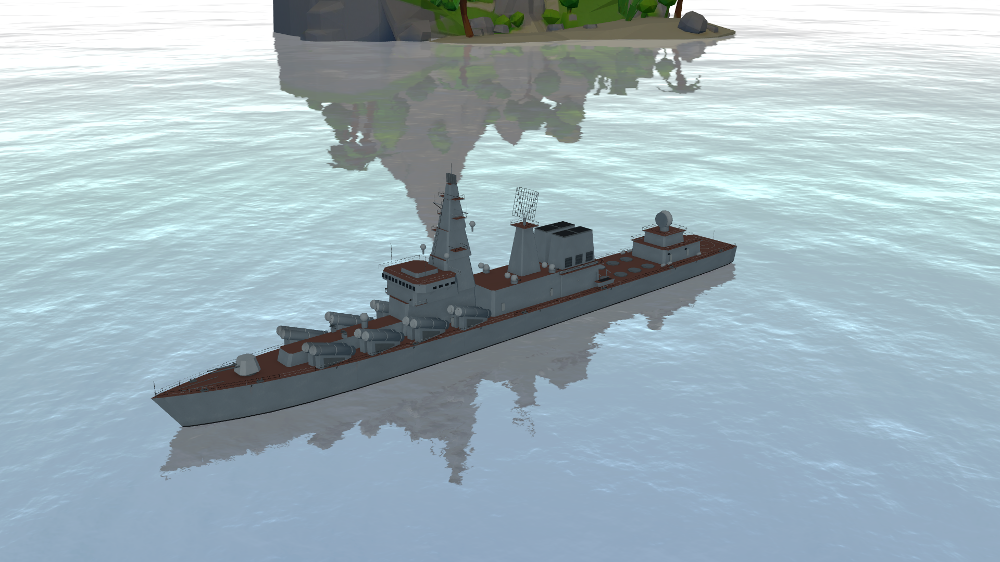
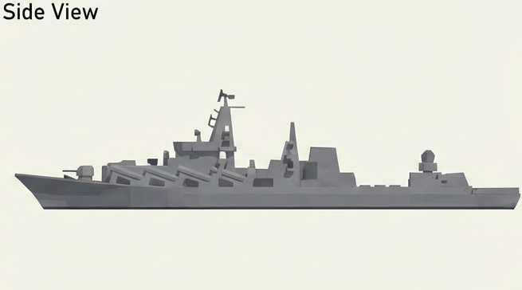
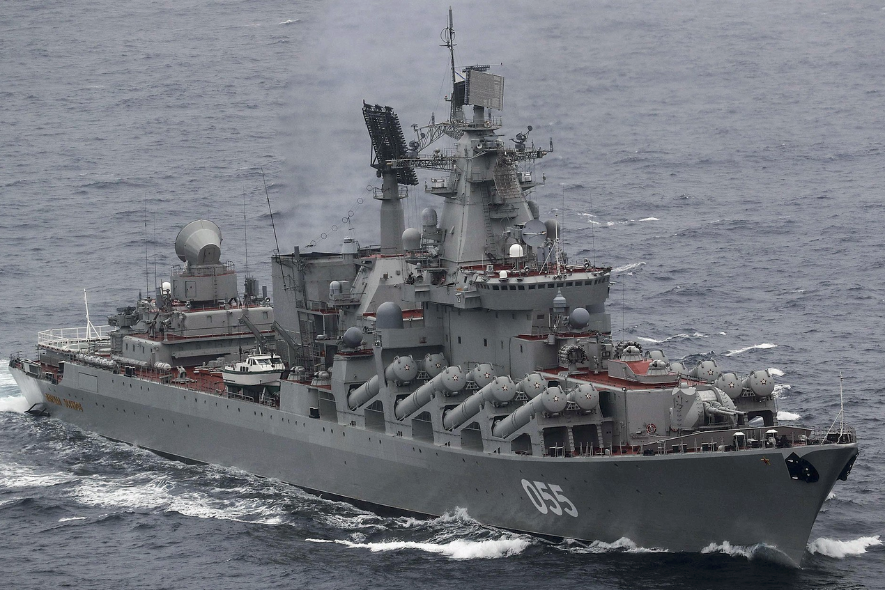
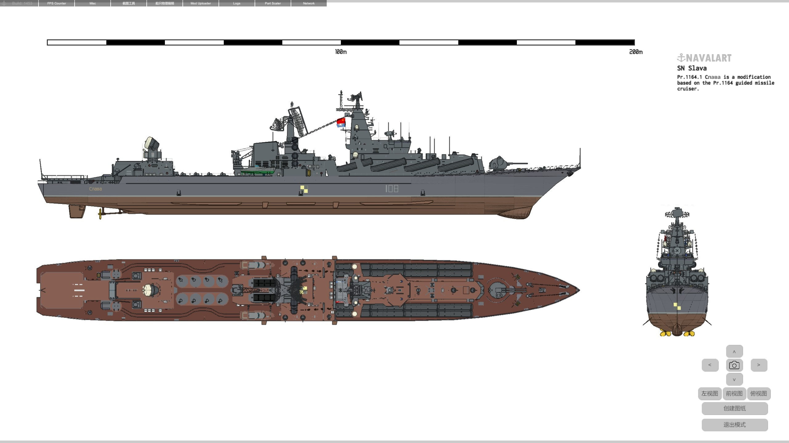
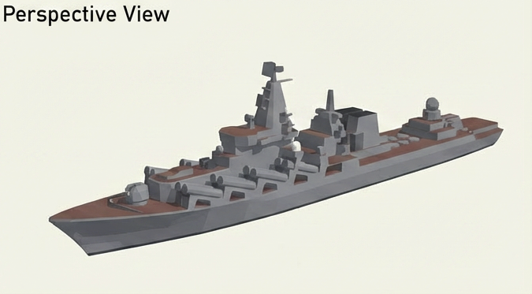

Slava-Klasse · Überarbeitetes Kreuzer-Asset
9.852 Dreiecke einschließlich sichtbarer Bewaffnung · 15 gepackte PBR-Texturen · bestehende Spielregeln unverändert.
Im Spiel-Renderer

1920 × 1080, originale Szenen- und Schiffsfabriken; freie Kamera, kein laufendes Match.
Vorher / nachher – tatsächlich ausgelieferte GLBs
Gleiche Kamera und Beleuchtung; Modelle aus dem Spiel erneut importiert.
Seitenansicht

Die bereitgestellte Seitenreferenz hat den Bug links; die Kontrollansicht rechts. Details der Antennen folgen vorrangig dem echten Foto.
Primäre Foto-Referenz

Große Seitenbatterien, breite Brücke, gestufter Mast und rotbraune Decks. Kein exakt datierter Ausrüstungsstand behauptet.
Weitere Nutzerreferenzen

